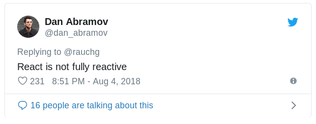

Швидше, Svelte - це компілятор, який отримує ваш код і видає нативний JavaScript, який безпосередньо взаємодіє з DOM без необхідності в будь-якому посереднику.

Реактивність
count += 1;
count += 1; $$invalidate('count', count);
Менше коду - краще DX
Продуктивність
React API:
shouldComponentUpdate
useMemo
React.PureComponent
та інші
Фреймворки - це не інструменти організації вашого коду. Це інструменти для організації вашого розуму.
Rich Harris
Нумо покодимо!
Особливості
Це компонентний фреймворк з 0 додатковими залежностями
Використовує ізоляцію стилів без використання CSS-in-JS
Щоб почати роботу потрібен лише дуже простий скрипт збірки
У базовому проекті практично немає ніяких додаткових файлів